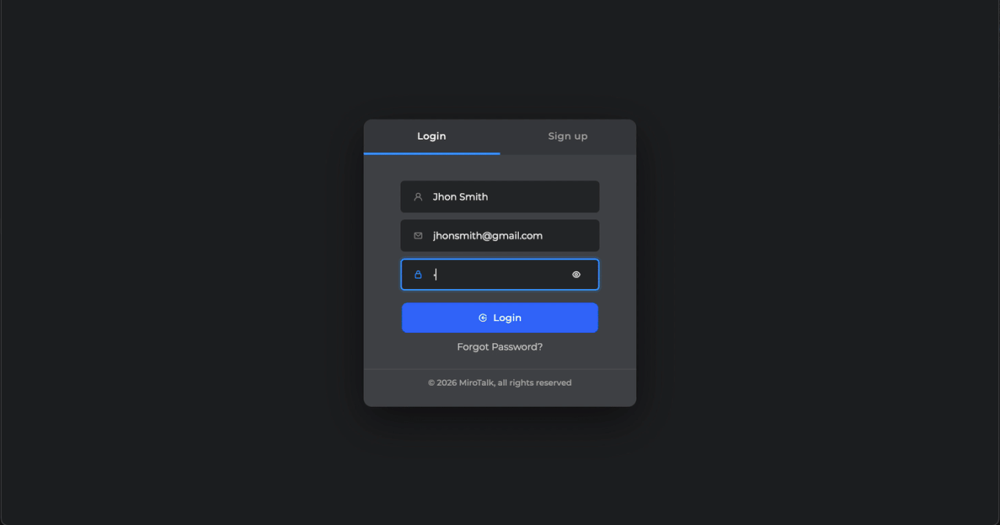

User Authentication
Registration, login, email verification, and admin/user roles.
Give users accounts, personal dashboards, room scheduling, subscription plans, and unified access to your MiroTalk video applications.
Your Video Workspace
Build a branded portal for scheduling, users, rooms, plans, and connected video experiences.
Registration, login, email verification, and admin/user roles.
Each user manages their own rooms from a focused workspace.
Create, modify, delete, organize, and share meeting rooms.
Configure subscription plans and customer management workflows.
Persistent storage for users, rooms, settings, and platform data.
Separate administrative controls from end-user workflows.
Multi-App Integration
Connect the MiroTalk products your workflow requires. Video applications are separate CodeCanyon products.
Scalable group video conferences.
Lightweight peer-to-peer meetings.
Private one-to-one cam-to-cam calls.
Low-latency live broadcasting.
Guest-friendly click-to-call video.

Embed and Automate
Embed the workspace or manage users and rooms programmatically.
Server Requirements
Common Questions
Build Your Platform
One-time purchase. Full source code. Scheduling, dashboards, and SaaS workflows.
Buy MiroTalk WEB